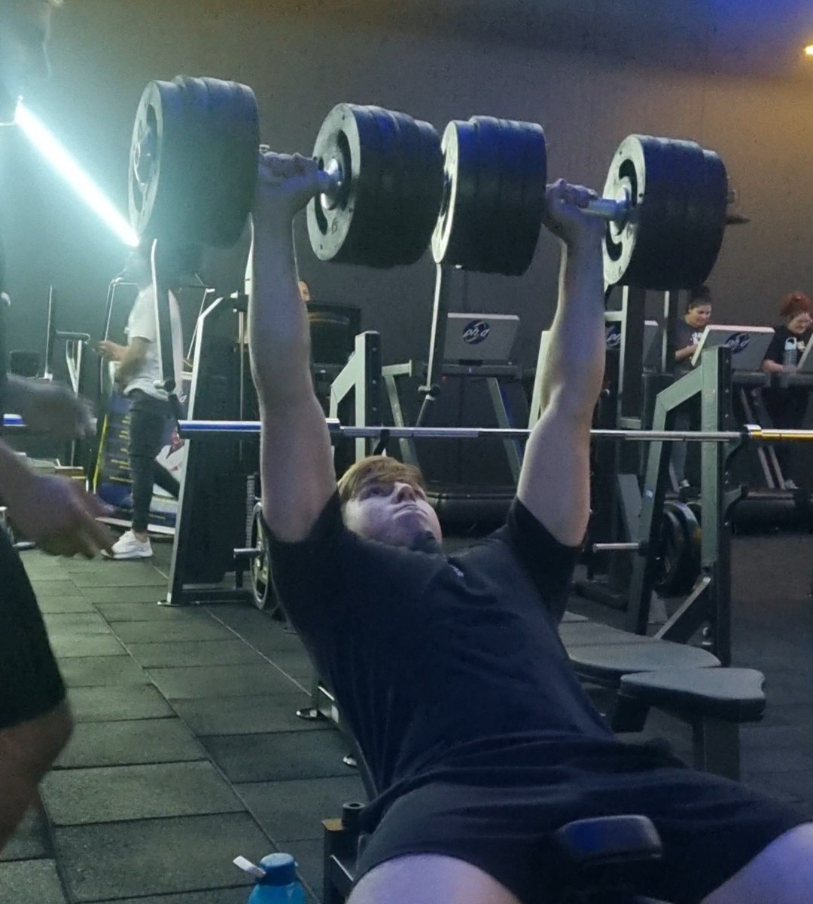
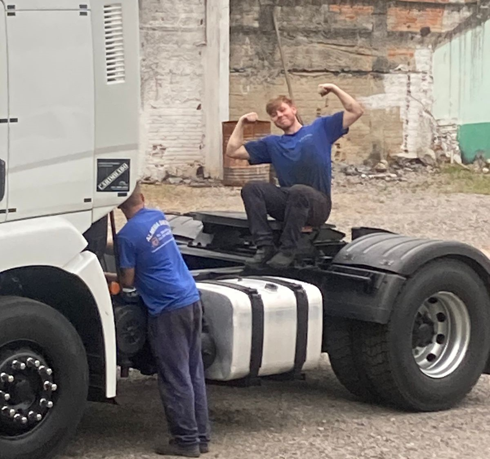

Meus projetos

Eu na academia
Fazendo supino inclinado com halter 40kg pela primeira vez,começei a academia com apenas 12kg no supino e logo depois de 10 meses consegui fazer o supino inclinado com 40kg pela primeira vez.

Decidindo o Futuro:
Decidi seguir carreira de mecanica pois e a área que eu mais tenho conhecimento e experiencia pois meu pai me ensinou deis que eu começei a trabalhar.

Mundo dos jogos
Eu comprei um jogo faz ja um tempo ELDEN RING uma obra prima que eu viciei denovo nos jogos pois mesmo com tudo que eu tenho eu nao sentia vontade de jogar mais esse jogo revivel a minha vontade.